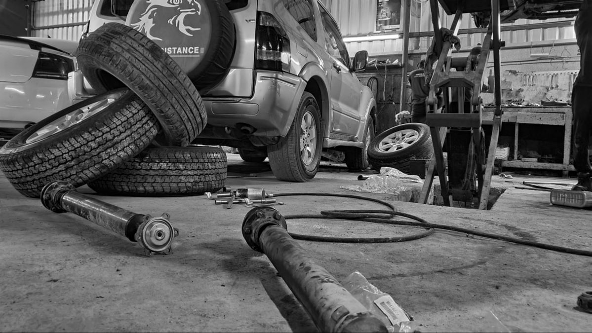
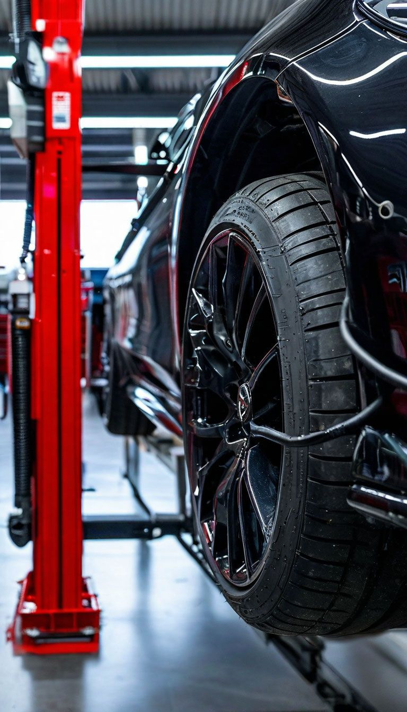

- Діаметр та профіль (R13…R22, низькопрофіль потребує акуратності).
- Тип шини (RunFlat складніший у монтажі).
- Клас авто (SUV/мікроавтобус: вага, інколи інші режими).
- Стан дисків (биття, корозія посадки, потреба герметизації).
- Складність ремонту (місце проколу, зона корду, кількість пошкоджень).
Запис онлайн • без зайвих слів • контроль якості на кожному етапі
Шиномонтаж Paxorin у Києві — швидко, точно, без нервів
Заміна шин, балансування, ремонт проколів і бокових порізів, підкачка та перевірка тиску, заміна вентилів, герметизація борту, сезонне зберігання комплектів. Працюємо акуратно: правильний момент затяжки, чисті посадочні площини, перевірка биття, контрольний проїзд (за потреби).
15–40 хв типова заміна 4 коліс
Гарантія на роботи
Безпека датчиків TPMS
Чесні ціни без “дрібного шрифту”
Уточнення про адресу: на сторінці використана реальна адреса в Києві для прикладу.
Якщо тобі потрібен конкретний “реальний бізнес без сайту” — заміни дані на підтверджені.
Послуги шиномонтажу
Конкретно та по суті — без “додаткових сюрпризів”. Пояснюємо, що робимо і навіщо.
01
Заміна шин / монтаж
Демонтаж/монтаж, правильна посадка борту, перевірка диска, очищення посадочної поверхні, контроль моменту затяжки. Працюємо обережно з низькопрофілем.
02
Балансування коліс
Динамічне балансування з перевіркою дисбалансу, оптимізація положення шини, контроль бічного/радіального биття. За потреби — повторна перевірка після тест-проїзду.
03
Ремонт проколів
Ремонт джгутом/латкою/грибком (за ситуацією), перевірка герметичності, контроль тиску. Пояснюємо, коли ремонт безпечний, а коли краще заміна.
04
Сезонне зберігання
Маркування комплекту, пакування, зберігання у контрольованих умовах. Фіксація стану шин/дисків на прийомі та видачі — щоб все було прозоро.

Дрібниці, які реально впливають на результат
• Підбір правильного режиму монтажу для RunFlat та низького профілю.
• Очищення контактних поверхонь диска для рівної посадки.
• Перевірка вентилів, ущільнювачів та ковпачків — часта причина мікропідтравлювання.
• Делікатна робота з датчиками TPMS, щоб не зламати кріплення та не “вбити” батарею.
• Затяжка з моментом — не перетягуємо, але й не залишаємо “на чесному слові”.
• Фінальний контроль тиску та рекомендація під ваш режим їзди/навантаження.
TPMS безпечний монтаж
RunFlat досвід
Момент затяжки
Герметичність контроль
Ціни (орієнтир)
Остаточна вартість залежить від діаметра, типу шини, складності ремонту та стану дисків.
| Послуга | Що входить | Від |
|---|---|---|
| Заміна шин (1 колесо) | Демонтаж/монтаж, контроль тиску, посадка борту | 260 грн |
| Балансування (1 колесо) | Перевірка дисбалансу, вантажі, контроль після встановлення | 180 грн |
| Ремонт проколу | Діагностика, ремонт (латка/грибок), перевірка герметичності | 240 грн |
| Заміна вентиля | Зняття/встановлення, герметизація, перевірка тиску | 120 грн |
| Герметизація борту | Очищення, герметик, посадка, контроль мікропідтравлювання | 160 грн |
| Сезонне зберігання (комплект) | Маркування, пакування, облік, зберігання | 480 грн/міс |
Порада для економії часу: якщо є другий комплект дисків — заміна проходить швидше.
Якщо диски “підбиті”, краще одразу додати перевірку биття та підбір оптимального положення шини.
Як ми працюємо
Стандартизований процес з контролем якості. Так менше помилок і більше прогнозованості.
1
Прийом та діагностика
Питаємо про симптоми (вібрація, “веде” кермо, підспускає). Оглядаємо протектор, боковину, диск, вентиль/TPMS. Узгоджуємо план робіт до старту.
2
Виконання робіт
Акуратний демонтаж/монтаж, чистка посадки, балансування, ремонт (за потреби). Для складних кейсів — додатковий контроль герметичності та повторна перевірка.
3
Контроль та рекомендації
Фінальний тиск, момент затяжки, перевірка “на місці”. Пояснюємо, як доглядати шини, коли перевірити тиск, і що робити після ремонту проколу.
“Після балансування кермо стало ідеально спокійним на 110–120. Пояснили причину вібрації.”
І Ігор, Вишневе
“Вперше бачу, щоб так уважно чистили посадочні площини. Підспускання зникло.”
О Олена, Київ
“Працюють швидко, але без “аби зробити”. Датчики TPMS цілі, тиск тримає.”
М Максим, Софіївська Борщагівка
Про сервіс Paxorin
Наша ідея проста: зробити шиномонтаж не “лотереєю”, а передбачуваною процедурою.
Що для нас важливо
Точність — балансування та затяжка з контролем, а не “на око”.
Безпека — уважність до боковини, корду, зони ремонту, TPMS.
Комунікація — говоримо людською мовою: що знайшли, що пропонуємо, чому це потрібно.
Чистота процесу — так, навіть шиномонтаж може бути акуратним.
Для кого це
• Для водіїв, які не хочуть “експериментів” з колесами.
• Для тих, хто цінує час (запис + зрозуміла черга).
• Для авто з низьким профілем, RunFlat, SUV/кросоверів.
• Для тих, кому важливий комфорт: менше вібрації, рівніша їзда, кращий ресурс гуми.

FAQ — коротко відповідаємо на часті питання
Щоб не витрачати час у чатах — усе по поличках.
Типово 15–40 хв залежно від діаметра, типу дисків, наявності RunFlat, стану кріплень та необхідності додаткового контролю.
Якщо потрібна герметизація борту або ремонт — час збільшується, і ми попередимо до початку.
Причини: биття диска, нерівномірність шини, неправильна посадка борту, бруд між маточиною та диском,
неточна центровка, або “з'їдений” протектор. Балансування вирішує не все — інколи потрібна перевірка геометрії диска
та оптимізація положення шини.
Залежить від зони та глибини пошкодження. Якщо поріз у критичній зоні корду — краще не ризикувати.
Ми пояснимо варіанти та безпеку рішення. Якщо ремонт недоцільний — так і скажемо.
Ми працюємо обережно: правильне позиціонування шини на станку, контроль зусилля, огляд кріплення.
Але TPMS може бути вже зношений/окислений — тому перед роботою оглядаємо та попереджаємо.
Рекомендовано: помити/висушити, перевірити протектор, позначити місця (перед/зад, ліво/право).
У нас — маркування та пакування включені, також фіксуємо стан на прийомі.
Контакти та запис
Заповни форму — ми підтвердимо час. Або телефонуй, якщо ситуація термінова.
Форма запису
Після відправки відкриється ваш поштовий клієнт (mailto). Якщо пошта не налаштована — текст заявки буде скопійовано у буфер (де підтримується).
📍
Адреса
Київ,
вул. Саксаганського, 120
Якщо приїжджаєте вперше — краще зателефонувати за 3–5 хв до прибуття.
🕘
Графік
Пн–Сб: 09:00–19:00
Нд: вихідний
У сезон (весна/осінь) можливі пікові навантаження — запис дуже бажаний.